O que nos torna humanos? Da mascara teatral a dignidade ontologica, a historia do conceito que define quem somos.
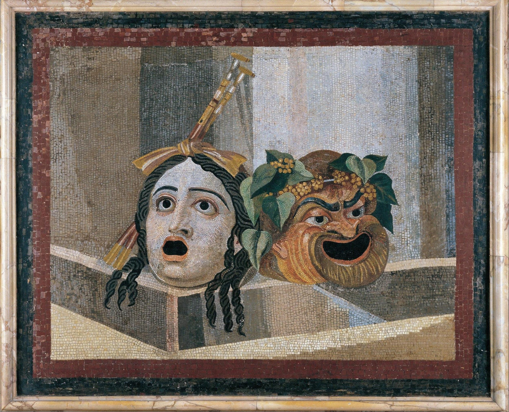
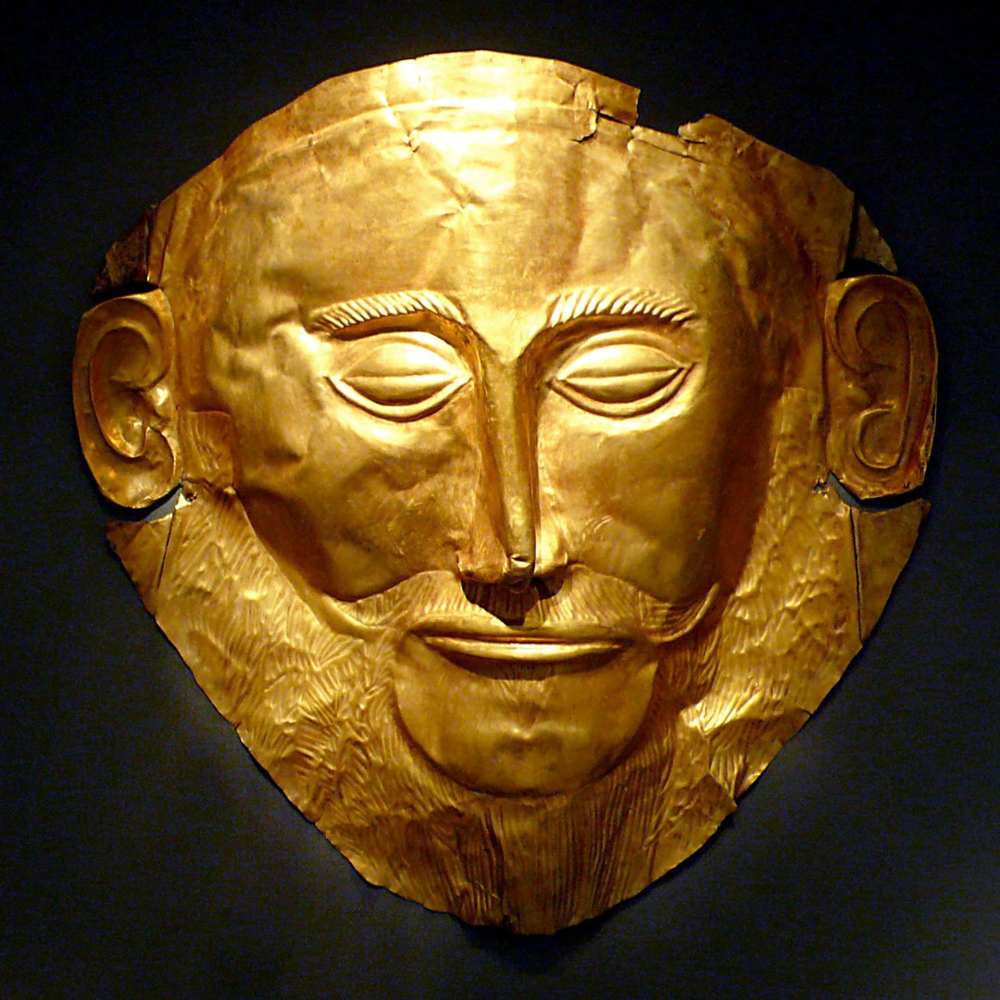
O termo pessoa vem do etrusco phersu, em grego prosopon e latim persona, que designa a mascara de teatro ou o personagem, o papel desempenhado pelo ator.
A esquerda, Poeta (Menandro?) sentado com mascaras da Nova Comedia, comecos do sec. I a.C. a comecos do sec. I d.C., Princeton University Art Museum, NJ.
Acima, Mosaico das mascaras de teatro, sec. II AD, Musei Capitoloni, Roma.
Mascaras para diversas ocasioes. Da mascara funeraria micenica dita "de Agamenon" (sec. XVI a.C.) as mascaras teatrais japonesas noh, coreanas Hahoe, cerimoniais do Pacifico, da sociedade secreta Ngil (Fang, Gabao), de Sanxingdui (China, ca. XII-XI secs. a.C.), a mascara da vergonha e a fantasia veneziana de carnaval.
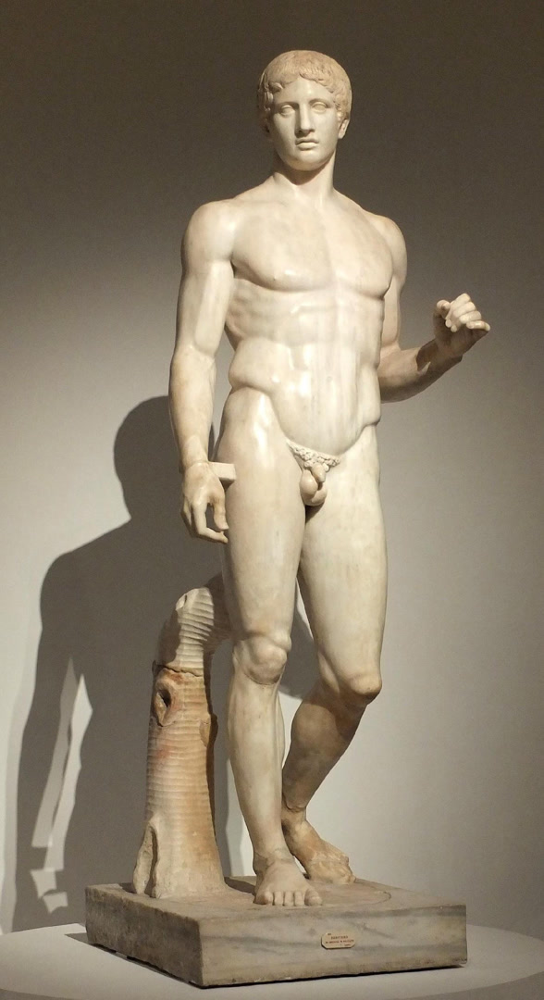
A arte grega foca no aspecto essencial do ser humano — o corpo perfeito. Ja a arte romana dos secs. I a.C. a II d.C. enfatiza a individualidade com um "realismo ate as verrugas".
A esquerda, o doriforo (lanceiro) de Pompeia, copia de Policleto, orig. ca. sec. V a.C., Museu Nacional Antropologico, Napoles — a perfeicao abstrata da escultura grega.
O realismo romano: homem velho de cabeca velada, talvez um sacerdote ou pater familias, sec. I a.C., Museus Vaticanos; e busto em perfil do patricio de Torlonia, ca. 80-70 a.C.
O conceito de pessoa nao e grego nem filosofico na origem, mas teologico e cristao, derivando dos debates sobre a Trindade e a Encarnacao nos primeiros Concilios Ecumenicos.
A Trindade, Laurent Girardin, ca. 1640, The Cleveland Museum of Art. A reflexao sobre o dogma trinitario transformou persona de termo comum em categoria ontologica fundamental.
O Concilio de Constantinopla I (381) estabeleceu a formula "uma essencia em tres pessoas" para descrever a Trindade.
O Concilio de Calcedonia (451) definiu Cristo como uma pessoa em duas naturezas (divina e humana), consolidando persona como sujeito subsistente incomunicavel em relacao constitutiva com os outros.
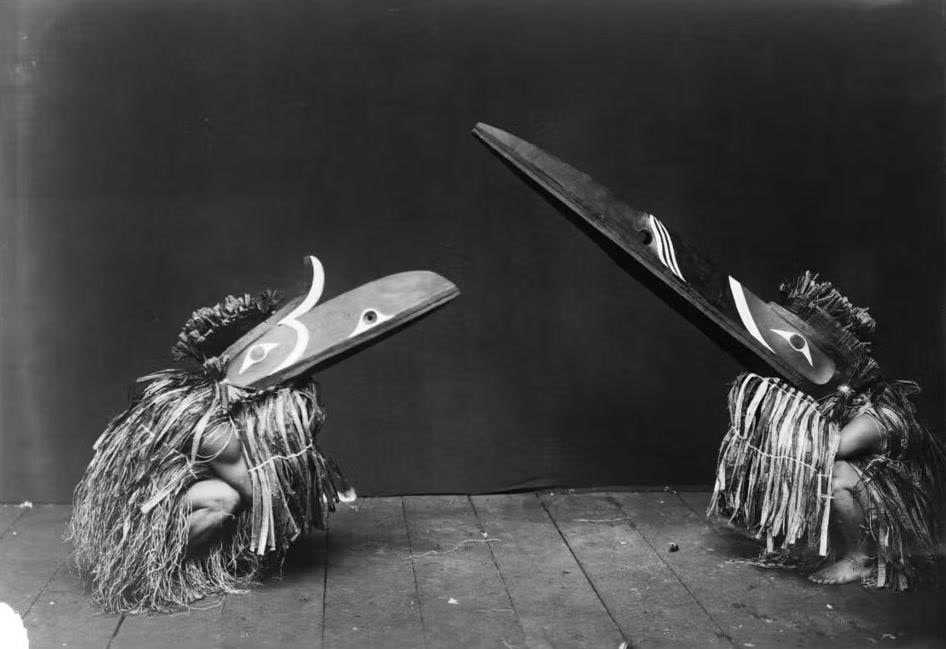
De Boecio a Tomas de Aquino, a construcao filosofica do conceito que dominaria por seculos.
Boecio cunhou a definicao classica que dominaria por mil anos: "Pessoa e substancia individual de natureza racional". No entanto, esta definicao nao considera o aspecto relacional inerente a pessoa.
Ricardo inovou ao definir a pessoa, nas criaturas, como "existencia incomunicavel de uma natureza intelectual" e ensinou que o amor perfeito exige pluralidade de pessoas.
Tomas sintetiza Boecio e os Vitorinos: nas criaturas, pessoa e substancia racional individual, o que ha de mais perfeito no Universo; em Deus, pessoa e relacao subsistente. Essa dupla definicao preserva tanto a dignidade metafisica como a dimensao relacional.
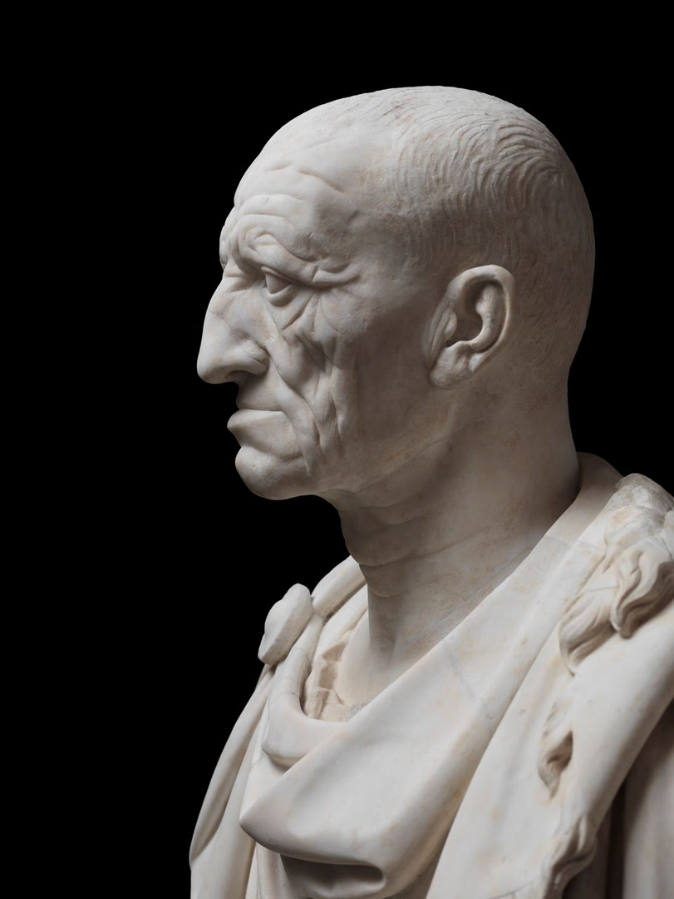
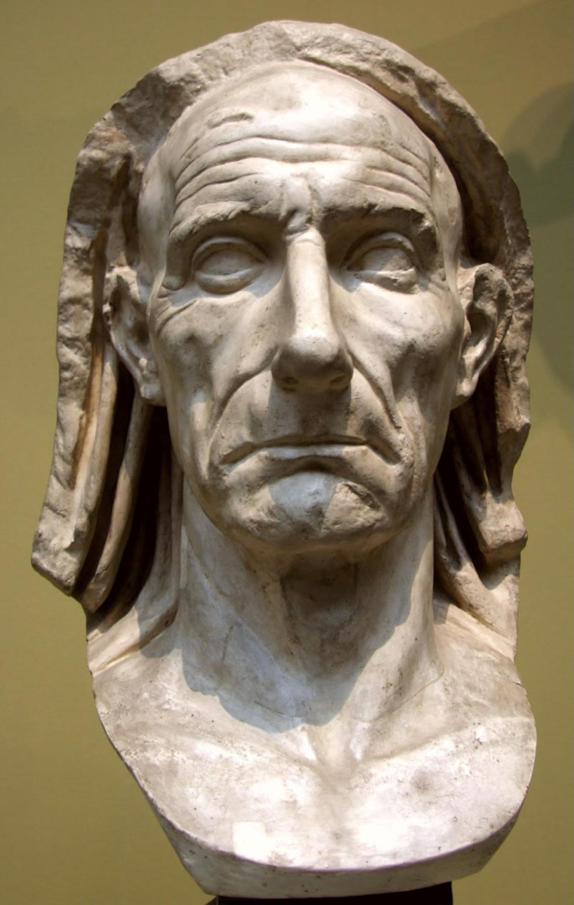
A modernidade abandonou o modelo tomista. Descartes reduziu a pessoa a res cogitans (coisa pensante) separada do corpo (res extensa), criando um dualismo radical que nega a unidade substancial corpo-alma.
John Locke operou uma mudanca revolucionaria do criterio ontologico (substancia) para o psicologico (consciencia e memoria). Isso destroi a substancialidade e leva a absurdos: a amnesia destruiria a pessoa?
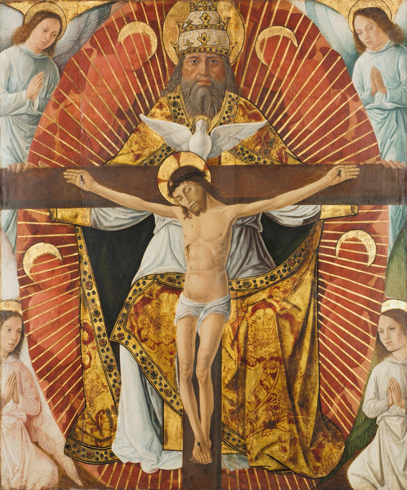
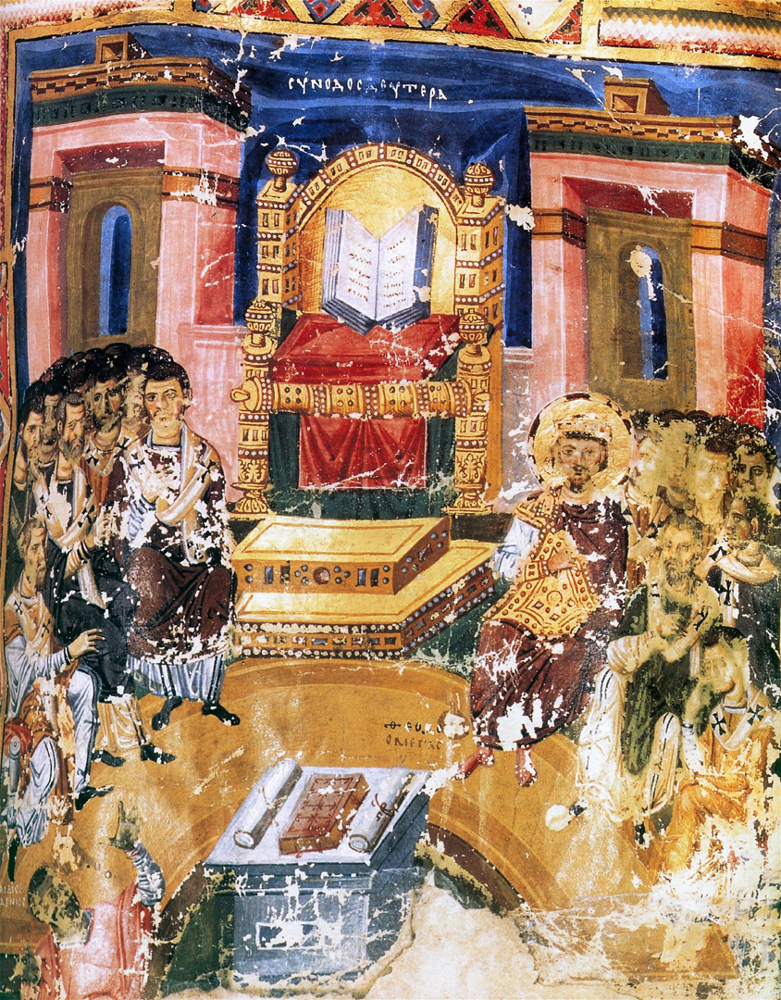
Kant restaura a dignidade absoluta com a sua formula: "Age de tal modo que uses a humanidade sempre como fim e nunca simplesmente como meio" — mas fundamentou a dignidade apenas na razao autonoma, tornando o seu conceito fragil diante do utilitarismo.
O existencialismo ateu de Sartre reduz a pessoa a pura liberdade autocriadora, mas ao negar a natureza humana torna impossivel uma etica objetiva e conduz ao desespero diante da vida.
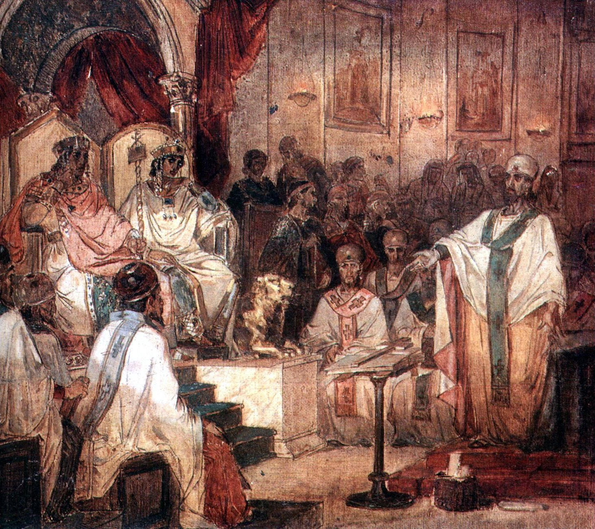
Nietzsche foi ainda mais radical: negou a existencia da pessoa, reduzindo-a a uma "ficcao gramatical" e a um agregado de impulsos — o principal dos quais seria a vontade de poder —, fornecendo as bases ideologicas para o imoralismo e os totalitarismos do seculo XX.
Acima, Nietzsche, Rudolf Koselitz, 1901, Fundacao Classica de Weimar. E o "homem-tanque", ate hoje desconhecido, que parou os tanques na Praca Tiananmen em Beijing, 05.06.1989.
A pessoa nunca pode ser tratada como mero meio; a unica atitude adequada em relacao a pessoa e o amor.
— Karol Wojtyla
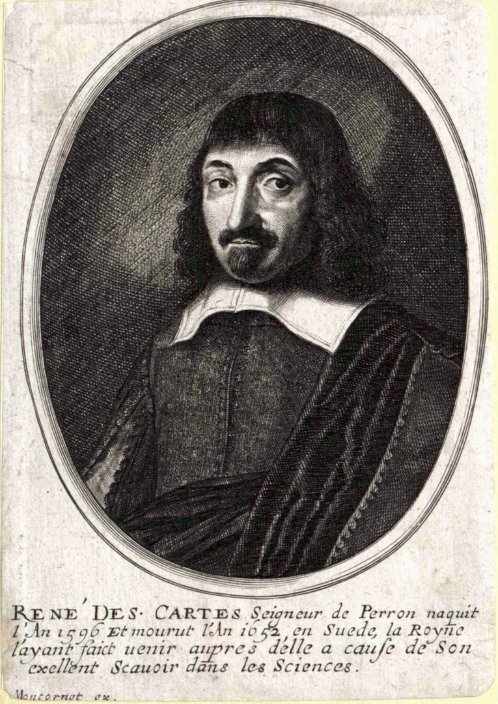
A fenomenologia trouxe contribuicoes valiosas mas parciais: Husserl fala da pessoa como um ego transcendental constituinte. Merleau-Ponty recorda que "Eu sou o meu corpo". Levinas afirma a responsabilidade infinita pelo bem do Outro.
O pos-modernismo (Foucault) dissolve totalmente a ideia de pessoa, reduzindo-a a uma "construcao de poder", caindo num relativismo radical autodestrutivo.
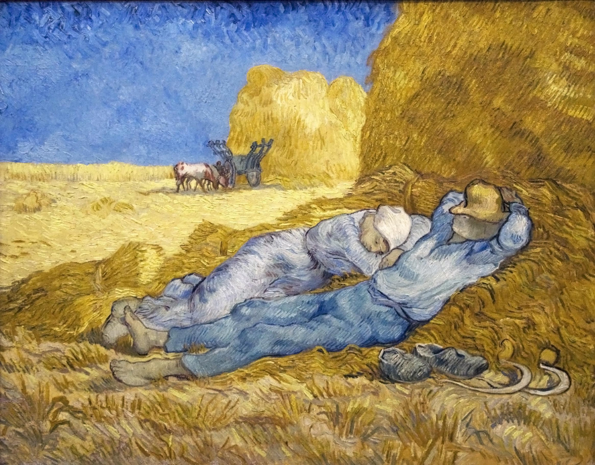
Martin Buber (1878-1965) recupera a dimensao dialogal e relacional da pessoa. Para Buber, nao ha "Eu" isolado, mas apenas o Eu-em-relacao; e toda relacao Eu-Tu aponta para Deus como Tu Eterno, fundamento de todas as relacoes.
"No principio e a relacao... Toda vida real e encontro." A Orante, sec. III d.C., Catacumbas de Priscila, Roma — a pessoa em relacao com o divino.
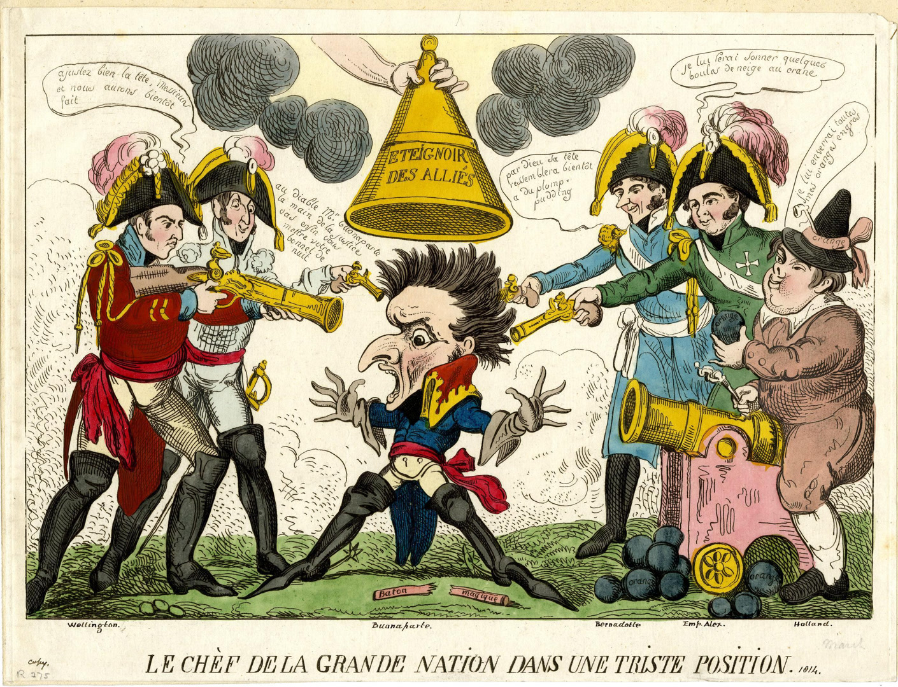
Karol Wojtyla (Joao Paulo II, 1920-2005) desenvolve uma fenomenologia da acao: "Na experiencia de agir, a pessoa se revela como sujeito distintivo" atraves da eficacia, do ser-causa e da autodeterminacao.
Ensina a transcendencia da pessoa, porque a pessoa se possui e se governa a si mesma, integrando as dimensoes corporal, emotiva e espiritual sem dualismo — o corpo e uma dimensao da pessoa, nao um mero instrumento.
A Teologia do Corpo (1979-1984) revela o significado esponsal do corpo: o corpo manifesta a vocacao da pessoa ao dom de si no amor. A esquerda, Cantico dos canticos, de Marc Chagall.
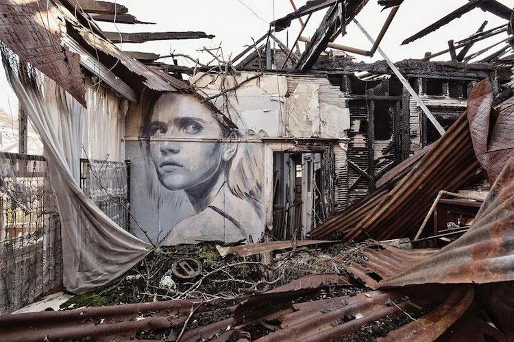
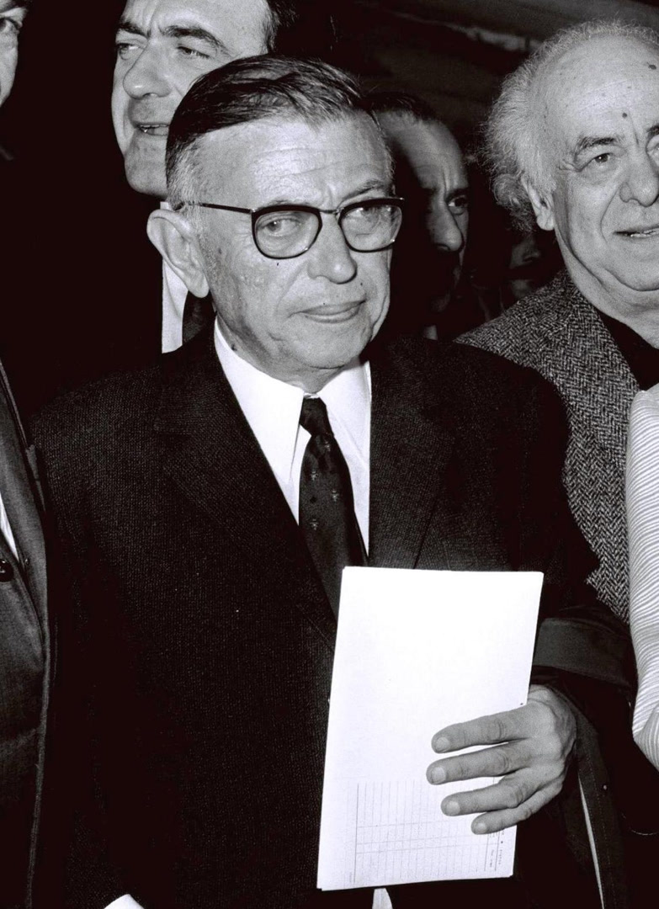
Os pensadores contemporaneos que completam a visao personalista.
Paul Ricoeur (1913-2005) distingue entre o idem (sou eu mesmo ao longo de toda a minha existencia) e o ipse (sou inconfundivel com qualquer outro), e a identidade se mantem atraves da promessa e da narrativa autobiografica.
Charles Taylor (1931-) mostra que a identidade pessoal e inseparavel de orientacoes ou fontes morais e quadros de referencia. "Saber quem sou e saber onde estou" no espaco moral. Taylor critica a cultura moderna secular porque "cortou suas conexoes com as fontes morais que lhe davam significado pleno".
O personalismo cristao (Buber-Wojtyla-Ricoeur-Taylor) oferece a visao mais adequada porque integra verdades dispersas, evita reducionismos, fundamenta solidamente a dignidade e os direitos humanos, e enraiza a pessoa no seu fundamento divino.
A pessoa humana permanece um misterio (Gabriel Marcel) — nao um problema a resolver, mas uma realidade a contemplar: imagem de Deus, liberdade autodeterminante, interioridade privilegiada, transcendencia ao mundo, singularidade irrepetivel. A semelhanca da Trindade, encontra comunhao na distincao e relacao sem absorcao.
A pessoa e substancia individual de natureza racional, criada a imagem de Deus — e atinge a sua plenitude no dom de si, ordenada a comunhao eterna com Deus.